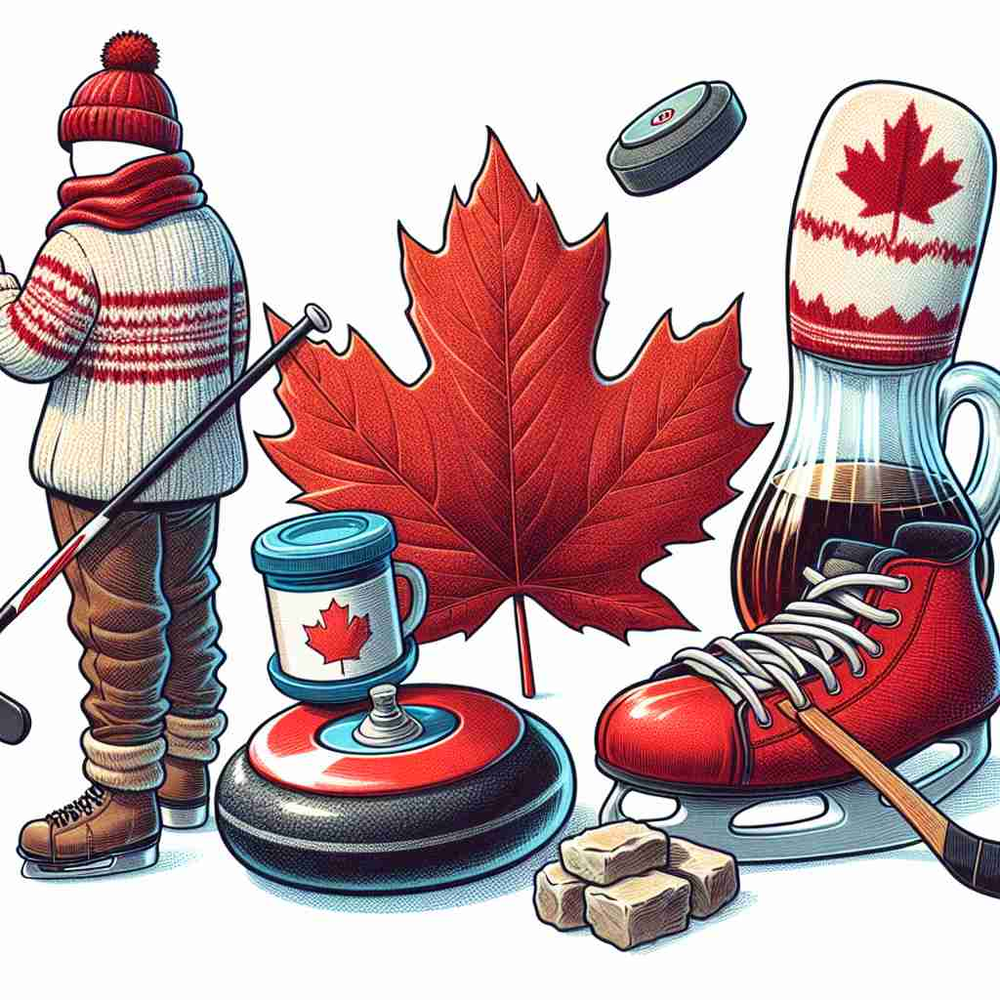

💬 The boy is proud of the Canadian flag behind him. 男孩为他身后的加拿大国旗感到自豪。

💬 The man enjoys Canadian winter sports like curling and ice hockey. 这个男人喜欢加拿大的冬季运动，比如冰壶和冰球。
💬 The boy is proud of the Canadian flag behind him. 男孩为他身后的加拿大国旗感到自豪。
💬 The man enjoys Canadian winter sports like curling and ice hockey. 这个男人喜欢加拿大的冬季运动，比如冰壶和冰球。
🧠 记忆'Canadian'时，想象一片红色的枫叶（加拿大国旗上的标志）。这个核心意象代表了一切与加拿大相关的事物，无论是人、语言还是文化特征。通过这个联想，你可以轻松记住并理解'Canadian'的各种用法。
🔈 [kə'neɪdɪən]
🗝️ adj. relating to or characteristic of Canada or its people 与加拿大或其人民相关或具有其特征的
🎭 想象一个美丽的秋天，小镇上处处都是金黄的枫叶。在镇中心，一场节日正在举行。背景音乐中传来悠扬的民俗歌曲，人们身着代表加拿大本土文化的传统服饰，展示了'Canadian'作为与加拿大或其人民相关特征的生动场景。
💬 The Canadian flag features a maple leaf. 加拿大国旗上有一片枫叶。
🌳 由基本词 'Canada'（加拿大）加上形容词后缀 '-ian' 组成，表示 '加拿大的' 或 '加拿大人'。
💡 记忆 'Canadian' 时，可以联想为 'Canada + -ian'，表示与加拿大相关的人或事物。从国家名 'Canada' 衍生出形容词，指代该国的属性或居民。
🗝️ n. a native or inhabitant of Canada 加拿大本地人或居民
🎭 在一个充满活力的街角咖啡馆，一群朋友正欢快地聊天。其中一位是从温哥华来的本地人，他用地道的口音谈论当地的滑雪胜地，展示了'Canadian'作为加拿大本地居民的表现。
💬 Many Canadians enjoy playing ice hockey. 许多加拿大人喜欢打冰球。
🤔 从形容词转变为表示人的名词
🗝️ n. the form of English spoken in Canada 加拿大使用的英语形式
🎭 在一个国际语言交流活动中，来自不同国家的参与者聚集在一起。一个来自加拿大的参加者在与其他人交谈，语音中夹杂着特有的'eh'，展现了'Canadian'英语的独特形式。
💬 Canadian English has some unique words and expressions. 加拿大英语有一些独特的词汇和表达方式。
🤔 从形容词转变为表示语言的名词
🗝️ n. a person of Canadian descent 具有加拿大血统的人
🎭 在一个温馨的家庭聚会上，祖孙三代围坐在一起，分享着家庭历史故事。一位年轻人听着祖辈讲述他们从加拿大移民来的故事，体现了'Canadian'作为拥有加拿大血统的人的含义。
💬 Though born in the US, she considers herself a Canadian due to her parents' origins. 虽然出生在美国，但她由于父母的籍贯而认为自己是加拿大人。
🤔 扩展到包括有加拿大血统的人